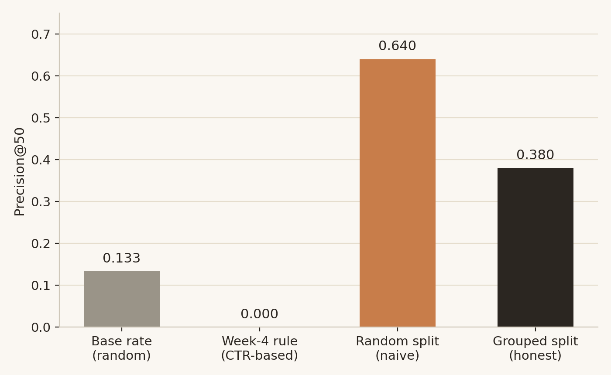
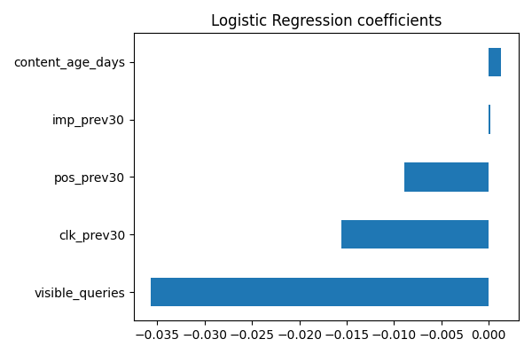

Introduction
Across FlyRank's own client portfolio — the same production search data behind this study — a content team managing thousands of pages per client cannot read every one by hand each week.In practice, someone has to decide: which pages get checked first? A wrong priority order has a real cost — a reviewer's limited hour spent on a page that was never actually at risk is an hour not spent on a page that was.
This project asks a narrow, practical version of that question: within one lane — Refresh & Content Opportunity Scoring — can a simple model, trained on a page's own recent search performance, rank pages by risk of decline better than a hand-written rule and better than chance? The decision this supports is a weekly review queue, not an automated action.
Data
This study uses the FlyRank ML Internship Warehouse, a production search-performance dataset released for this program on Hugging Face, built on roughly 79 million underlying rows of daily content performance. Three tables were used:
fact_content_daily_performance— one row per content item, per client, per day, with Google Search Console metrics (impressions, clicks, average position) and a GA4 availability flag.dim_content— static content metadata, including creation date, word count, and content type.fact_content_query_90d— a trailing 90-day summary of the distinct search queries each page has earned visibility for.
The working window is February 1 – March 31, 2026, a mid-panel span chosen deliberately: the warehouse's own documentation flags its most recent month as a reserved, non-random sealed holdout, not meant for iterating on label logic. Using an earlier window keeps that final month untouched for any future out-of-time check.
The modeling population was filtered to content items with at least 50 impressions in the prior 30-day window — pages too new or too small to measure a meaningful trend on were excluded, rather than silently zero-filled. This left 73,112 content items, with 18.2% labeled as declining under the definition below.
Methodology
Label definition
A content item is labeled declining if its impressions in the most recent 30-day window fell more than 20% below its impressions in the preceding 30-day window. This is a proxy, not a verified business outcome — it describes a pattern in search visibility, not a confirmed loss of real-world value.
Features
Five features were used, each chosen to be knowable strictly before the label's own time window:
imp_prev30,clk_prev30,pos_prev30— impressions, clicks, and average position, summed/averaged only over days before the label window.visible_queries— the count of distinct search queries the page has historically earned visibility for.content_age_days— days since the content was created, a fixed and always-past value.
Baseline
Before any model was trained, a hand-written rule was built and tested: flag pages ranked in the top 20 search positions whose click-through rate sits meaningfully below the average CTR for their position tier. This targets a different, related problem — visible-but-under-clicked pages — and is reported here as a baseline a model should be measured against, not as an input to the model itself.
Validation design
Pages from the same client share templates, niche, and overall site health — a random row-level split risks letting the model implicitly learn client-specific patterns during training and then get "tested" on more pages from that same client. All results below use a client-grouped split (75% train / 25% test, zero clients appearing in both sides), which asks the honest question: does this work on a client the model has never seen?
Leakage checks
Two checks were run against this feature set before trusting any result. First, the training feature list was confirmed to exclude the baseline rule's own score, so the model could not simply learn to imitate the rule. Second, a deliberate trap was run: re-adding the raw value the label itself is computed from as a feature. Honest Precision@50 of 0.380 jumped to a perfect 1.000 — the textbook signature of leakage — confirming the real feature set is clean once that column is excluded.
Results
Four numbers anchor this section: what a random guess would score, what the Week-4 rule scores on this specific target, what an honest split reports, and what a naive split would have claimed instead.

| Method | Precision@50 | Note |
|---|---|---|
| Base rate (random) | 0.133 | Expected score from picking 50 pages at random |
| Week-4 baseline rule | 0.000 | Built for a different target (CTR vs. position), not a fair loss |
| Naive random split | 0.640 | Overstated — client identity leaked across train/test |
| Grouped split (reported result) | 0.380 | Honest, out-of-client evaluation — ≈2.9× the base rate |
The gap between the naive split (0.640) and the honest split (0.380) is itself a finding: a 41% relative overstatement from a validation design that looks correct but quietly lets the model memorize client-level patterns rather than a genuinely transferable signal.

visible_queries carrying the largest weight. These are raw,
unstandardized coefficients, measured on different scales, so relative bar
length is suggestive rather than a precise ranking of true effect size.
A companion Random Forest model, evaluated on the same split, ranked features
differently in relative order (visible_queries and
content_age_days led, followed closely by imp_prev30)
but scored lower overall (Precision@50 = 0.320) than the simpler logistic
regression — a reminder that added model complexity did not pay for itself on
this five-feature set.
Limitations
visible_queries, the
model's strongest feature, is drawn from a fixed trailing 90-day table whose
window can overlap the prediction target window — treated here as a soft
signal pending a cleaner window-aligned rebuild.
Ranked Recommendations
Every flagged page carries the same recommended action — a human review for refresh or consolidation — paired with one of three reason codes describing why the model flagged it.
aging_narrow_visibility
Older content with a narrower-than-typical spread of search queries — the model's two strongest signals combined. Likely candidates for a content refresh: updating facts, expanding thin sections, improving topical coverage.
high_traffic_volatility
Pages with unusually large prior-window impressions showing a swing beyond the decline threshold — a sizeable page where even a modest percentage move is a large absolute change. Worth a first check for whether the move reflects a real trend or ordinary noise at that scale.
general_decline_risk
Flagged by the model without matching either specific pattern above — still worth a human look, with less diagnostic context attached.
Human review, required before any action
A reviewer should confirm the page's search intent still matches its content, check whether a recent manual change already addressed the apparent issue, and rule out an external explanation (seasonality, a tracked outage, a URL migration) before treating the flag as a real content problem.
What should never be automated
- Auto-publishing content changes based on a flag
- Auto-removing or deprioritizing pages from a site
- Reallocating budget or traffic based on score alone, without sign-off
- Applying this queue to a client type or time period outside the validated scope
Monitoring and retrain triggers
Re-validate if the portfolio's base rate of declining pages drifts meaningfully from 18.2%, if feature importance order shifts substantially from the current ranking, if a new client segment is onboarded, or if three months pass without a recheck against fresh data — this model has only been tested on one static window.
Reproducibility
Every step in this paper — the data contract, the signal audit, the baseline, the model, the validation audit, and the action playbook — is a runnable notebook in the accompanying public repository, using the same Hugging Face warehouse release cited above.
- github.com/samhere3116-maker/ML-Pipeline — full repository
work/notebooks/w03_data_contract.ipynb— grain checks, availability, the five features, the leakage trapwork/notebooks/w04_baseline_score.ipynb— the CTR-based baseline rulework/notebooks/w05_model.ipynb— the trained model vs. baselinework/notebooks/w06_validation_audit.ipynb— the honest-split audit and leakage re-checkwork/notebooks/w07_action_playbook.ipynb— the ranked queue and reason codes behind this page
All random splits use random_state=42 for exact reproducibility.